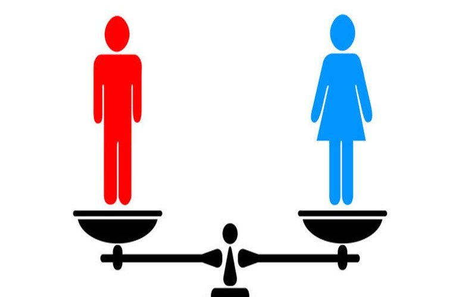

| El enfoque de género significa agudizar la mirada y disponerse a conocer lo social desde determinado ángulo | La perspectiva de género consiste en asumir el compromismo individual e institucional de modificar la condicion y posición de las mujeres logrando un sistema de sexo-género más equitativo y justos |
| Todos los ámbitos de interacción como son: el reproductivo, el producto; el comunitario, el político y el cultural, sean igualmente valorados y considerados como necesarios para el desarrollo de la sociedad en su conjunto Tanto mujeres como hombres, están encargados en forma flexible y equitativa de desarrollar actividades enfocadas a su desarrollo | |